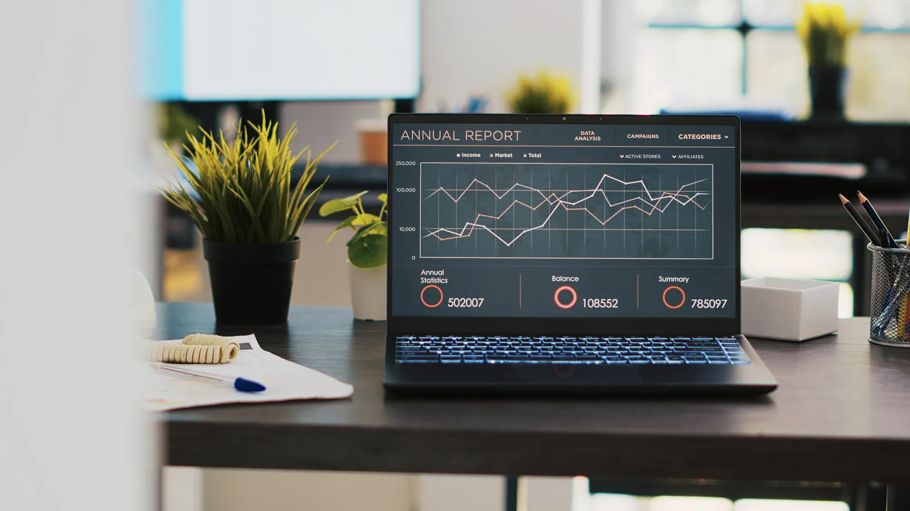

1. List everything you have
Before anything moves, get a complete list of URLs on the current site. Three sources together cover almost everything:
- A crawl of the live site with a tool such as Screaming Frog, which lists every page, image and redirect it can reach.
- Your WordPress sitemap, usually at
/sitemap.xmlor/sitemap_index.xml, which also catches pages that are no longer linked from the menu. - Google Search Console, Performance report, Pages tab, set to the longest date range. This shows which URLs actually get impressions and clicks.
Put it all into one spreadsheet with a column for each URL's traffic and backlinks. This sheet becomes your redirect map later.
2. Mark the pages that earn traffic
Usually a small share of pages brings most of the visits and links. Mark them clearly. They need the closest attention: the same topic, the same heading, the same depth of content and, if possible, the same URL.
This is also the moment to decide what not to move. Thin tag pages, old event pages and duplicate posts with no traffic can be merged or redirected to a stronger page. Moving less is often better for SEO, as long as every removed URL still redirects somewhere useful.
3. Plan the new URL structure
Static pages in Webflow can live at any path, so /about or /services/design stay exactly as they are. CMS items work differently: every item lives under its collection folder, for example /blog/post-name.
That means WordPress posts at the root, like /post-name, or under dates, like /2024/05/post-name, will get a new URL. That is fine. Choose the new pattern once, keep the slugs identical, and every change gets a redirect in step 7.
When the last part of the URL stays the same, Google connects the old and new page faster, and one pattern redirect can cover hundreds of posts at once.
4. Model the CMS before importing
Create the collections first: usually posts, categories and authors, plus case studies or resources if you have them. For each post, plan fields for:
- name, slug and publish date;
- the main content as rich text;
- a featured image with alt text;
- a separate SEO title and meta description;
- references to the category and the author.
Separate SEO fields matter. They let you bind the page title and description to each item, so every post keeps its own snippet in search results instead of sharing one generic line.
5. Export, clean and import the content
Export posts from WordPress with the built-in export tool or an export plugin that outputs CSV. Then clean the export before it touches Webflow:
- remove shortcodes and page builder markup that Webflow's rich text can't read;
- convert galleries, embeds and tables into formats that work in rich text, or rebuild them as components;
- check that every post has a slug, a title and a date.
Import the CSV into the collection, then open a sample of posts and compare them side by side with the originals. Pay special attention to images inside the text. If they still load from the old WordPress domain, they will break when the old hosting is switched off. Move them to Webflow before launch.
6. Rebuild templates and keep on-page SEO
Rebuild each template natively, with one clear H1 per page and the heading structure the old pages used. Then go through the on-page details that rankings depend on:
- page titles and meta descriptions, bound to the CMS fields from step 4;
- alt text on images;
- Open Graph images for sharing;
- structured data, such as Article or FAQ schema, added through the page settings;
- internal links inside posts, updated to the new URLs so they don't go through redirects.
7. Build and test the 301 redirect map
This step decides whether your rankings survive. Every old URL that changes must point to its new address with a permanent 301 redirect. In Webflow, redirects live in the site settings under Publishing, and they support patterns, so a single rule can move a whole folder:
/2024/05/(.*) → /blog/%1
/category/(.*) → /blog/category/%1/2024/05/webflow-tips→/blog/webflow-tips301/category/news→/blog/category/news301/about-us→/about301/web-design-services→/services/websites301/old-promo-page→/ (home page)AvoidUse your spreadsheet from step 1 as the source. Redirect each URL to the most relevant new page, not to the home page. Google treats mass redirects to the home page much like missing pages.
After publishing, test the full list: every old URL should answer with one 301 and land on a page that returns 200. Watch for chains, where one redirect leads to another.
8. Check everything before switching the domain
- Make sure the Webflow staging address is not indexed, so Google does not see two copies of your site.
- Crawl the staging site for broken links and missing titles or descriptions.
- Compare titles and descriptions of your top pages against the old site.
- Test every form, integration and tracking tag.
- Check speed and mobile layouts on real phones, not only in the browser.
9. Launch and tell Google
Connect the domain in Webflow, publish, and then:
- open your redirect list and spot-check the most important URLs live;
- submit the new sitemap in Google Search Console;
- use URL Inspection on your top pages to request indexing;
- check that
robots.txtallows crawling.
Keep the old WordPress site available on a private address for a few weeks, in case you need to recover a page or an image.
10. Watch the numbers for 30 days
Rankings often wobble for a week or two after a move while Google recrawls the site. That is normal. What is not normal is a steady drop. During the first month, check Search Console every few days:
- Pages report: new "Not found (404)" errors mean a redirect is missing. Add it.
- Performance report: compare clicks for your top pages with the weeks before the move.
- Sitemaps: make sure the new sitemap is read without errors.
Most issues show up in the first two weeks and take minutes to fix when someone is watching.

The mistakes we see most often
- Redirecting every old URL to the home page.
- Forgetting images inside blog posts that still load from the old server.
- One shared meta description for the whole blog.
- The staging site indexed alongside the live one.
- Changing slugs and content at the same time on the pages that earn the most traffic.
Next step
Get a fixed quote in 24 hours.
Send a short brief or your site address. You get a written plan with the scope, the timeline and a fixed price. See how we handle WordPress to Webflow migration.